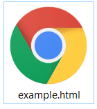

Web Terminology
WWW:
WWW stands for World Wide Web. The most popular application running on the Internet is the WORLD WIDE WEB (WWW). It is used for sending emails and files through Internet by using TCP/IP along with transport mechanism.
The World Wide Web (WWW) or web is a software application that makes it easy and possible for nearly anyone to publish and browse hypertext documents on the internet.
WWW or Web is a collection of web sites that you can access via the internet.
Page or Web page: A file that can be read over the World Wide Web.
Pages or Web pages: The global collection of documents associated with and accessible via the World Wide Web.
Hyperlink: A String of clickable text or a clickable graphic that points to another web page or document.
Hypertext: Web pages that have hyperlinks to other pages. More generally, any text having non linear links to other text.
Browser : A Software tool used to view web pages, read e-mail and read newsgroups, among other things.
Multimedia : Information in the form of graphics, audio, video or movies. A multimedia document contains a media element other than just plaintext.
Uniform Resource Locator : A String of characters that specify the address of a web page.
Surfer: A person who spends time exploring the World Wide Web.
Web presentation : A collection of associated and hyperlinked web pages.
Web master(or) Web manager : A person who maintains, creates and manages a web presentation, often for a business, organization or university.
Web site : An entity on the internet that publishes web pages. A website typically has a computer serving web pages, where as a web presentation is the actual WebPages themselves.
Web server : A computer that satisfies user requests for Web pages.
Mirror site : A site that contain a duplicate copy of a web presentation from another site.
What is SGML:
This is a language for describing markup languages, particularly those used in electronic document exchange, document management, and document publishing. HTML is an example of a language defined in SGML.
Basic HTML
HTML means Hypertext Markup Language. In 1960 Ted Nelson introduced Hypertext. HTML is a scripting language which is used to create web pages. If you are thinking of creating your own web pages, you need to know at least basic HTML. These HTML documents are plain text files, user can create these documents using text editor like Notepad or Edit.
HTML is a hypertext Language because it supports font styled text, pictures, graphics and animations and also it provides hyper links that used to browse the Internet easily. Text becomes hypertext with the addition of links that connects other hypertext documents.
Rules to write HTML Code:
- Every HTML document begins with start tag is terminates with an ending tag is
- HTML documents should be saved with the extension .html or .htm.
- A tag is made up of left operator(<), a right operator(>) and a tag name between these two operators.
- If you forget to mention the right operator(>) or if you give any space between left operator and tag name browser will not consider it as tag.
- At the same time if browser not understands the tag name it just ignores it, browser won’t generate any errors.
- HTML language is not case sensitive; hence user can write the code in either upper case or lower case. No difference between and
Syntax of a tag:
< Tagname [parameters=value] >
HTML Document Creation
To create a HTML document we need a text editor to create a file with the extension .html (or) .htm. Once we have constructed a file and saved it, we have to change the file permissions as “World readable” and “World executable”, so that other people on the web can access the document.
Creation of HTML:
The Following steps are needed to create a HTML page
Step 1: Open any text editor like Notepad, Edit, Word etc.
Step 2: Use the file menu to create a new document (File -> New) and type the code or program.
Step 3: Go to the file menu and choose saveas option (File->save) and give the name of the file under root directory(C:)( or any valid path).
Step 4: After saving, an internet explorer icon will be displayed as shown below

Step 5: Double click to execute it.
Structure of an HTML Document:
All HTML documents has the following basic structure.
< html>
< title >………………..< /title >
< head >……………….< /head >
< body >
………………………….
………………………….
………………………….
………………………….
< /body >
< /html >
The entire document is surrounded by < html >………….< /html >.